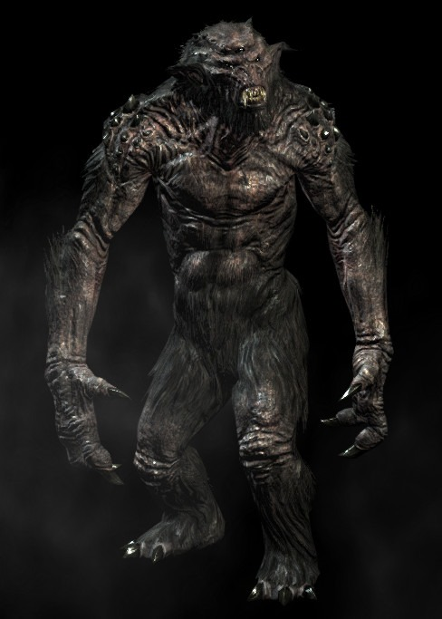

Troll's Tray

Description
Ah, that big chunck 'o meat we all need to fully restore our hunger and
spirits! The Draugr Crocs were just an appetizer, now it's the main course!
Troll's meat is extremely rich on proteins and healthy fats. It has an
excentric flavor which might be too strong for picky eaters. Follow this recipe
to extract the full potential of this mighty beast's meat.
Ingredients
- A troll's body
- Some wild potatoes
- A whole beehive
- Tomatoes, a bunch of 'em
- A bucket full of onions
- A large tray of garlic
- A bush of rosemary
Step by step
- dig a two-men tall grave large enough to fit the whole laying body
of our troll
- cover the hole's floor with head-sized rocks, then lit a fire at
the bottom of that pit, one big enough to be seen from the North.
Let it burn for one hour.
- Put the fire out, then cover the hell-smitten rocks with large
green leafs. This will make sure that the troll doesn't burn to a crisp.
- before putting the troll above the smoldering leafs, open up his belly
and shove all of them vegetables within its bowels. Also add the
beehive and the bush. The vegetables will slowly cook from inside-out,
the troll's body will serve as both our pot and our food.
- delicately throw the troll on the pit below on top of a metal board.
The metal board will facilitate it's unearthing. Cover it with more leafs
and an extra layer of thick bog clay. This will keep the heat inside for
a whole fortnight! Let it bake for 6 hours to ensure maximum softness.
- break the dry clay with a pickaxe or similar tool. Remove the upper leaves,
they should be reasonably cool, and then pull out the troll.
- That's it! The whole beast is eadible, minus the lower intestines.
The belly will be filled by a rich, thick bittersweet broth. This
meal serves up to 20 peasant's or 5 hungry dwarves. Enjoy!